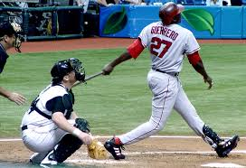

Vladamir Guerrero was a professional baseball player for multiple teams over his life time. He came up with the Montreal Expos but, then later to the Anaheim Angels where he spent the majority of his career. He later did leave and played with the Texas Rangers and Baltimore Orioles. This is his first year on the Hall of Fame ballot and many believe he will get in on his first try.
 Home